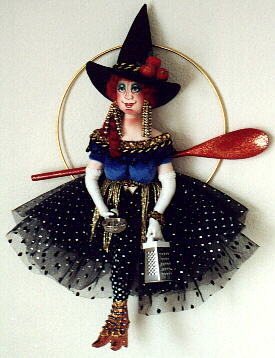
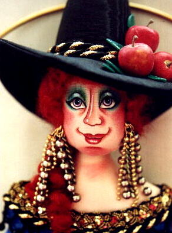

"Okra's Poem"
I'm not your usual Kitchen Witch
As surely by now you can see.
In fact, the kitchen is hardly the place
Where you'll find the likes of me.
I'm a pampered, "dine-out" sort of gal;
Give me candles and a bottle of wine.
Gourmet meals are much more my style,
And white glove service suits me just fine.
Give me a taste of Nouvelle Cuisine......
A night on the town is my fondest hope.
And just so we keep it all perfectly straight......
I'm really allergic to dishwashing soap.
But while I wait for a dinner date,
I'm happy to lend a hand.....
I'm sure we can cook up a gourmet delight,
As long as it's frozen or canned.
-Anne-Marie Brombal © 2000
